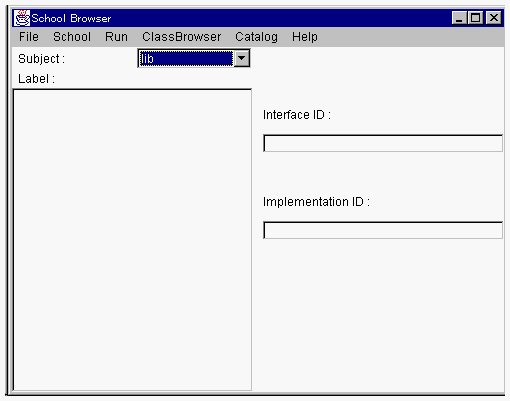
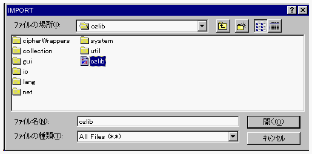

| |
OZ IDE を使用するためには、OZ IDEのグローバルオブジェクトを生成する必要があります。通常の方法で、グローバルオブジェクトを生成することができます。
OZ IDEの動作部クラス識別子は、JP.go.ipa.oz.user.ide.OzIDE_clです。
OZ IDEのグローバルオブジェクトを生成すると、プロジェクトマネージャとスクールブラウザが起動されます。
使用する標準ライブラリとIDE自身のスクール情報をスクールブラウザに登録する必要があります。
OZ IDEを生成すると、プロジェクトマネージャとスクールブラウザが開きます。それを終了させ（stop、あるいは、スクールブラウザのFileメニューからendを選びます（「OZ
IDEを終了する」）。
そして、ランチャあるいはOzVMを利用して、再度起動します。友情の方法で起動できます。
１．スクールブラウザのSubject:メニューリストを lib に設定してください。

２．そして、Ｆｉｌｅメニューから import... を選択してください。ファイルを選択するウィンドウが開きます。

３．$OZHOME/src/ozlib/ozlib.s を選択してください。Label: リストに値が設定されます。
４．スクールブラウザのSubject:メニューリストを ide に設定してください。
５．そして、Ｆｉｌｅメニューから import... を選択してください。ファイルを選択するウィンドウが開きます。
６．$OZHOME/src/ide/ide.s を選択してください。Label: リストに値が設定されます。
以上の操作で、初期設定が終了し、OZ IDE が使用できる状態になっています。作業を開始する前に、「OZ
IDE によるソフトウェア開発」をお読みください。
| |